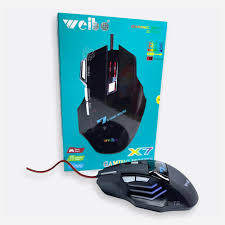

Aqui podras encontar lo maus gamig a los mejores precios



El mouse gamer o ratón de juegos es un dispositivo periférico de computadora que en realidad es una extensión de la mano del jugador de videojuegos. Es, ante todo, su herramienta de trabajo, por lo que no solo debe ser de alta calidad y conveniente, sino también lo más funcional posible.